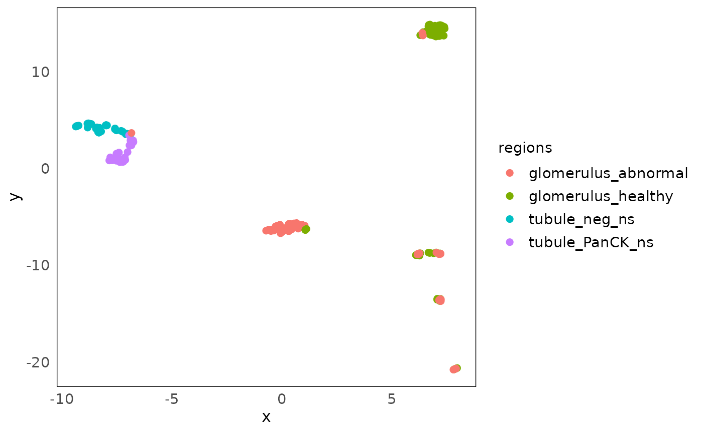
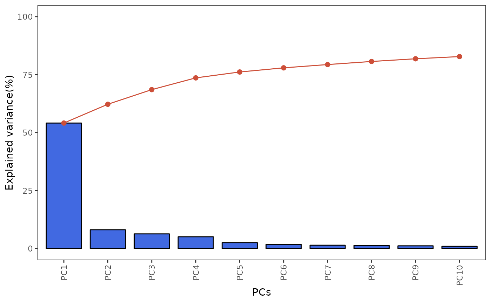
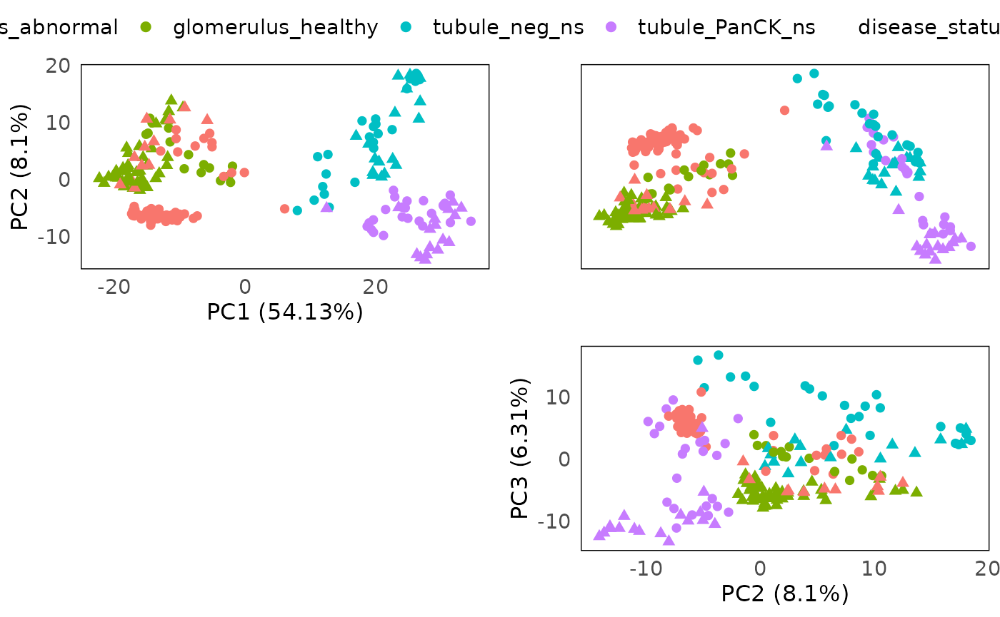
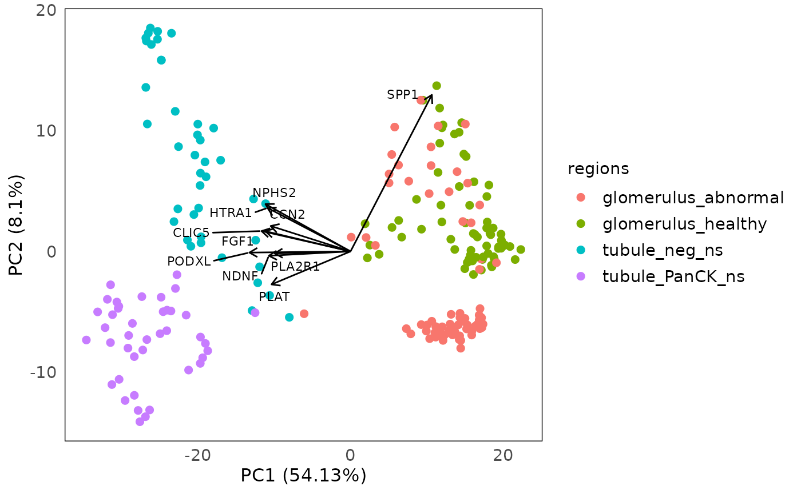
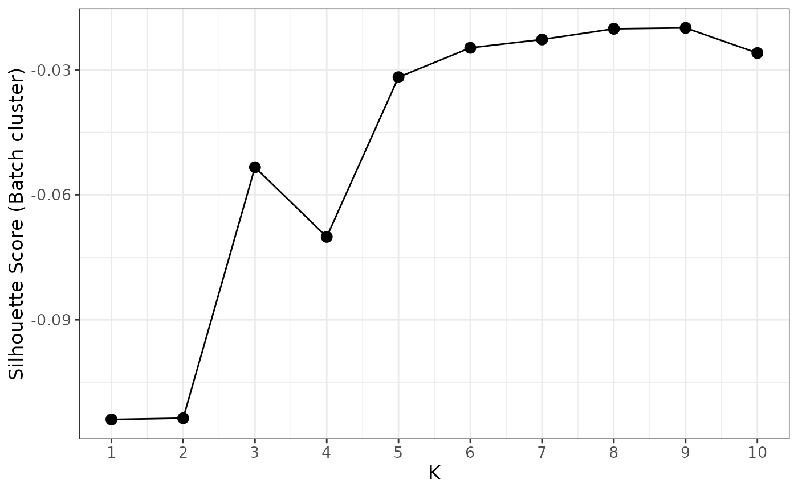
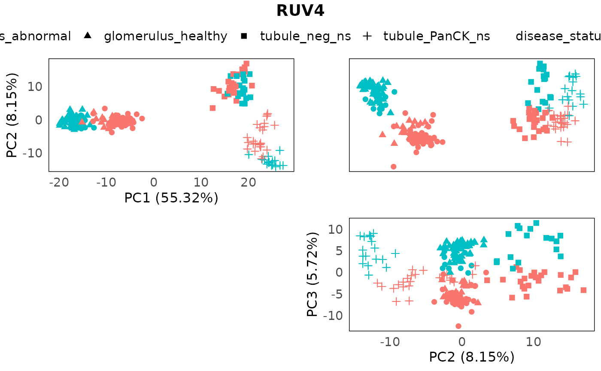
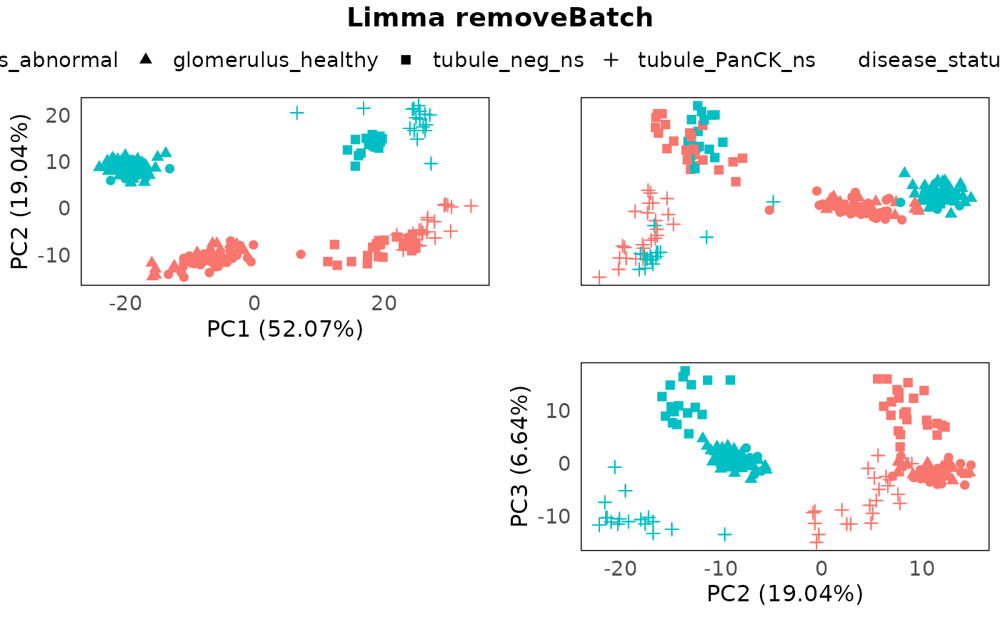

An introduction to the standR package
Ning Liu, Dharmesh Bhuva, Ahmed Mohamed, Chin Wee Tan, Melissa Davis
2022-03-17
standR_introduction.RmdIntroduction
The standR package is short for Spatial
transcriptomics analyzes
and decoding in R, it
aims at providing good practice pipeline and useful functions for users
to analyze Nanostring’s GeoMx DSP data, including data with GeoMX
protein (~30-60 markers), CTA (cancer transcriptome atlas, ~1800 genes)
and WTA (whole transcriptome atlas, ~18000 genes) panels.
The data analysis workflow consists of the following steps:
Workflow Steps
The purpose of this vignette is to demonstrate how to use standR to analyze Nanostring GeoMx DSP data.
Installation
The development version of standR can be installed from
GitHub:
devtools::install_github("DavisLaboratory/standR")Load packages and data
We will load the standR package. We designed the package
and the analysis workflow to be consistent with the BioConductor’s
Orchestrating Spatially Resolved Transcriptomics Analysis (OSTA)
framework, namely the SpatialExperiment.
In this vignette, we will use a publicly available WTA dataset of diabetic kidney disease (DKD) as the case study.
Import from paths
Data we are using here is a published whole transcriptome atlas (WTA) dataset of diabetic kidney disease (DKD).
The data is available here.
dirPath <- tempdir()
url_base <- "http://nanostring-public-share.s3-website-us-west-2.amazonaws.com/GeoScriptHub/KidneyDataset/"
download.file(paste0(url_base,"Kidney_Raw_TargetCountMatrix.txt"), destfile = file.path(dirPath,"Kidney_Raw_TargetCountMatrix.txt"))
download.file(paste0(url_base,"Kidney_Sample_Annotations.txt"), destfile = file.path(dirPath,"Kidney_Sample_Annotations.txt"))
download.file(paste0(url_base,"Kidney_Feature_Annotations.txt"), destfile = file.path(dirPath,"Kidney_Feature_Annotations.txt"))This is the background for the data:
NanoString GeoMx DSP dataset of diabetic kidney disease (DKD) vs healthy kidney tissue. Seven slides were analyzed, 4 DKD and 3 healthy. Regions of Interest (ROI) were focused two different parts of a kidney’s structure: tubules or glomeruli. Individual glomeruli were identified by a pathologist as either relatively healthy or diseased regardless if the tissue was DKD or healthy. Tubule ROIs were segmented into distal (PanCK) and proximal (neg) tubules. While both distal and proximal tubules are called tubules, they perform very different functions in the kidney.
In order to import the data into a spatial experiment object. We use
the readGeoMx function.
countFile <- "Kidney_Raw_TargetCountMatrix.txt"
sampleAnnoFile <- "Kidney_Sample_Annotations.txt"
featureAnnoFile <- "Kidney_Feature_Annotations.txt"
spe <- readGeoMx(dirPath, countFile, sampleAnnoFile, featureAnnoFile = featureAnnoFile, hasNegProbe = TRUE)Next, we inspect the SpatialExperiment object. For more details, see SpatialExperiment.
We can see the dataset has 18503 genes and 231 ROIs (regions of interest).
# check out object
spe## class: SpatialExperiment
## dim: 18503 231
## metadata(1): NegProbes
## assays(2): counts logcounts
## rownames(18503): PADI2 CYP24A1 ... FAM166A AGTPBP1
## rowData names(3): RTS_ID ProbeID Negative
## colnames(231): disease3_scan | 001 | PanCK disease3_scan | 001 | neg
## ... disease1B_scan | 023 | Geometric Segment disease1B_scan | 024 |
## Geometric Segment
## colData names(25): SlideName ScanName ... RoiReportY sample_id
## reducedDimNames(0):
## mainExpName: NULL
## altExpNames(0):
## spatialCoords names(2) : ROICoordinateX ROICoordinateY
## imgData names(0):Here we can see two types of count matrix, raw count in the
count assay and logCPM count in the logcount
assay.
assayNames(spe)## [1] "counts" "logcounts"Import from DGEList object
Alternatively, standR provided a function to generate a
spatial experiment object from a DGEList object (edgeR
package).
dge <- edgeR::SE2DGEList(spe)
spe2 <- readGeoMxFromDGE(dge)
spe2## class: SpatialExperiment
## dim: 18503 231
## metadata(0):
## assays(2): counts logcounts
## rownames(18503): PADI2 CYP24A1 ... FAM166A AGTPBP1
## rowData names(3): RTS_ID ProbeID Negative
## colnames(231): disease3_scan | 001 | PanCK disease3_scan | 001 | neg
## ... disease1B_scan | 023 | Geometric Segment disease1B_scan | 024 |
## Geometric Segment
## colData names(28): group lib.size ... RoiReportY sample_id
## reducedDimNames(0):
## mainExpName: NULL
## altExpNames(0):
## spatialCoords names(0) :
## imgData names(0):Quality control
The quality control (QC) procedures are consisting of three major steps:
Inspection of the sample metadata: sample metadata can be seen as tabular-like format using the
colDatafunction, however here we aim to visualise the relations among important sample metadata, such as what slides did the ROI come from, which are the control groups and treatment groups, what are the pre-defined tissue types etc. By doing this step, we can have a general idea of some important question such as how the experiment was designed, should we be looking out for batch effect, and what interested comparison can be established.Gene level QC: at gene level, by default we aim at removing genes that are not expressed in more than 90% of the ROIs, and identifying any ROIs with only few genes that are expressed. This is the similar process as
edgeR::filterByExpr, as genes with consistently low counts are unlikely be identified as DE genes, and only keeping genes with sufficiently large counts in the DE analysis can increase statistical power while reduce multiple testing burden.ROI level QC: at ROI level, we aim at identify low-quality ROIs with relatively small library size and low cell count. Problematic ROIs that are not removed could show up as separate clusters in PCA/UMAPs and further affect the comparisons in DE analysis.
Visualise metadata
To visualise sample metadata, we can use the
plotMetadata function. In this dataset, slides, diseases
status, tissue regions, and different subtypes of the tissues are the
important features that we could input into the function.
We can see that all glomerulus are classified as abnormal and healthy, and tubule are classified as neg and PanCK.
library(ggalluvial)
plotMetadata(spe, column2plot = c("SlideName","disease_status","region","pathology",
"SegmentLabel"))
We therefore merge the region-related annotations to avoid collinearity, which can affect the process of batch correction.
colData(spe)$regions <- paste0(colData(spe)$region,"_",colData(spe)$SegmentLabel) %>%
gsub("_Geometric Segment","",.) %>%
paste0(.,"_",colData(spe)$pathology) %>%
gsub("_NA","_ns",.)
plotMetadata(spe, column2plot = c("SlideName","disease_status","regions"))
Gene level QC
Using the addPerROIQC function, we can add key
statistics to the colData of the object. In this case,
argument rm_genes is set to TRUE, with the default settings
of min_count = 5 and sample_fraction = 0.9,
meaning here we first calculated a expression threshold on logCPM scale
(to account for library size differences), then genes that have
expression value below the threshold in more than 90% of the ROIs will
be removed. The count matrix with the removed gene are stored in the
metadata of the object, along with the calculated
expression threshold.
spe <- addPerROIQC(spe, rm_genes = TRUE)Here we can see that 121 genes are removed.
dim(spe)## [1] 18382 231## [1] "NegProbes" "lcpm_threshold" "genes_rm_rawCount"
## [4] "genes_rm_logCPM"Using the plotGeneQC function, we can have a look at
which were the genes removed and the overall distribution of percentage
of non-expressed genes in all ROIs. By default, top 9 genes are plotted
here (arranging by mean expression), user can increase the number of
plotted genes by changing the top_n parameter.
Moreover, users can order the samples (using parameter
ordannots) and color/shape the dots with annotation to find
out if these genes are specifically expressed in some samples (e.g. in
some tissue types or in some treatment group) so that we may need to
retain them.
plotGeneQC(spe, ordannots = "regions", col = regions, point_size = 2)
In this case we don’t see any specific biological pattern for the samples expressing this genes (figure above).
ROI level QC
Using the plotROIQC function, we are able to visualise
some QC statistics in the ROI level, such as library size and cell count
(AOINucleiCount) (the default settinngs for this function).
In the ROI level QC, we first aim to identify (if any) ROI(s) that have relatively low library size and low cell count because they are considered as low quality samples due to insufficient sequencing depth or lack of RNA in the chosen region.
In this case, looking at the distribution plots of library size and nuclei count, we don’t see any particular spike in the low ends, rather the distributions are relatively smooth. Looking at the dot plot, library sizes are mostly positively correlate with the nuclei count, with some data have relatively low library size while the nuclei count is reasonable. We therefore can try to draw an filtering threshold at the low end of the library size, in this case 50000. By coloring the dot with their slide names, we find that the ROIs below the threshold are all from slide disease1B, suggesting the reason for this might be some technical issues of slide disease1B.
plotROIQC(spe, y_threshold = 50000, col = SlideName)
Since library size of 50000 seems to be a reasonable threshold, here
we subset the spatial experiment object based on the library size in
colData.
Inspection of variations on ROI level
RLE
We can use function plotRLE to visualise the relative
log expression (RLE) of the data to inspect the technical variation of
the data by looking at the distance from the median of the RLE (the
boxplot dot) to zero.
By default, we are plotting RLE of the raw count, where most of the variation are from library size differences.
plotRLE(spe)Using assay = 2 to run RLE on the logCPM data, and we
can see that most technical variation from library sizes are removed.
And we can also sort the data using the annotation in the object by
specifying ordannots, with color or shape mapping parameter
as we usually write in ggplot, so that we can have a look at what factor
is heavily contributing to the technical variation.
Here we can see obvious variation from slides to slides, and small variations are also observed within each slide.
plotRLE(spe, ordannots = "SlideName", assay = 2, col = SlideName)PCA
Using the plotPCA function, we can perform principal
component analysis (PCA) on the data. The PCA plot can help visualising
the variation (both biological and technical) in the data and finding
out which are the main factors contributing to the variations.
Here we color the PCA with slide information, and shape by regions (tissue type). We can see that PC1 is mainly spread out by regions, especially glomerulus and tubule. And grouping based on slide within each tissue are observed. The subtypes in tubule are clearly separated, but different subtypes of glomerulus is still grouping together. Moreover, diseased tissues and control tissues are mixed as well (disease slides and normal slides).
plotPCA(spe, assay = 2, col = SlideName, shape = regions)
MDS
Similarly, plotMDS can be used to visualise the
multidimension scaling of the data.
standR::plotMDS(spe, assay = 2, col = SlideName, shape = regions)
UMAP
Further more, to be consistent with the scater package,
which is commonly used in single cell data and visium data analysis, we
provide the function plotDR to visualise any kinds of
dimension reduction results generated from scater::run*,
such as UMAP, TSNE and NMF, by specifying the dimred
parameter.
Here we plot the UMAP of our data. Similar variation can be observed like PCA and MDS above.

Other PCA-related visualizations
The standR package also provide other functions to
visualise the PCA, including the PCA scree plot, pair-dimension PCA plot
and PCA bi-plot.
plotScreePCA(spe, assay = 2, dims = 10)
plotPairPCA(spe, col = regions,
shape = disease_status, assay = 2)
plotPCAbiplot(spe, n_loadings = 10, assay = 2, col = regions)Normalization
As we observed the technical variations in the data in both RLE and PCA plots. It is necessary to perform normalization in the data.
In the standR package, we offer normalization options
including TMM, RPKM, TPM, CPM, upperquartile and sizefactor. Among them,
RPKM and TPM required gene length information (add
genelength column to the rowData of the
object). For TMM, upperquartile and sizefactor, their normalized factor
will be stored their metadata.
Here we used TMM to normalize the data.
colData(spe)$biology <- paste0(colData(spe)$disease_status, "_", colData(spe)$regions)
spe_tmm <- geomxNorm(spe, method = "TMM")Then we use RLE and PCA plot to assess the normalization count.
The RLE plot show most of the median of RLE are close to zero, indicating that lots of technical variation are removed.

However, batch effect from the different slides are still observed, confounding the separation between disease and normal.
plotPairPCA(spe_tmm, assay = 2, color = disease_status, shape = regions)
Batch correction
In the Nanostring’s GeoMX DSP protocol, due to the fact that one slide is only big enough for a handful of tissue segments (ROIs), it is common that we see the DSP data being confounded by the batch effect introduced by different slides. In order to establish fair comparison between ROIs later on, it is necessary to remove this batch effect from the data.
In the standR package, we provide two approaches of
removing batch effects, including RUV4 and Limma.
Correction method : RUV4
To run RUV4 batch correction, we need to provide a list of “negative control genes (NCGs)”.
The function findNCGs allows identifying the NCGs from
the data. In this case, since the batch effect is mostly introduced by
slide, we therefore want to identify NCGs across all slides, so here we
set the batch_name to “SlideName”, and select the top 500
least variable genes across different slides as NCGs.
## [1] "NegProbes" "lcpm_threshold" "genes_rm_rawCount"
## [4] "genes_rm_logCPM" "NCGs"Now we can run RUV4 on the data using function
geomxBatchCorrection. By default this function will use
RUV4 to normalize the data. For RUV4 correction, the
function is requiring 3 parameters other than the input object,
including factors: the factor of interest, i.e. the
biological variation we plan to keep; NCGs: the list of
negative control genes detected using the function
findNCGs; and k: is the number of unwanted
factors to use, in the RUV documentation, it is suggest that we should
use the smallest k once we don’t observe technical variation in the
data.
Here we can find the best k by using function findBestK
to examine the silhouette score of ruv4-normalized count data clustering
according to batch from k = 1 to 10, where the score is closing to zero
means we are more likely to successfully remove the batch effect from
the data. In this case, k = 5 is the satisfied k.
findBestK(spe, maxK = 10, factor_of_int = "biology", NCGs = metadata(spe)$NCGs, factor_batch = "SlideName")
We therefore will choose k=5 for this dataset.
spe_ruv <- geomxBatchCorrection(spe, factors = "biology",
NCGs = metadata(spe)$NCGs, k = 5)We can then inspect the PCA of the corrected data with annotations, to inspect the removal of batch effects, and the retaining of the biological factors.
plotPairPCA(spe_ruv, assay = 2, color = disease_status, shape = regions, title = "RUV4")
Correction method: limma
Another option is set the parameter method to “Limma”,
which uses the remove batch correction method from limma.
In this mode, the function is requiring 2 parameters, including
batch: a vector that indicating batches for all samples;
and design: a design matrix which is generated by
model.matrix, in the design matrix, all
biologically-relevant factors should be included.
spe_lrb <- geomxBatchCorrection(spe,
batch = colData(spe)$SlideName, method = "Limma",
design = model.matrix(~ 0 + disease_status + regions,
data = colData(spe)))## Coefficients not estimable: batch6Again, using PCA to inspect the batch correction process.
plotPairPCA(spe_lrb, assay = 2, color = disease_status, shape = regions, title = "Limma removeBatch")Evaluation
Summary statistics
Besides looking at the PCA plots of normalized count, another way to
evaluate the batch correction is by summarising statistics such as
adjusted rand index, jaccard similarity coefficient, silhouette
coefficient and etc. We can do this by using the
plotClusterEvalStats function. In the biology section,
higher the score is better while in the batch section, lower is
better.
We can see that when it comes to stratifying for biology factors (disease status and tissue regions) or measuring batch clustering for this dataset, RUV4 outperform Limma in most statistics.
spe_list <- list(spe, spe_ruv, spe_lrb)
plotClusterEvalStats(spe_list = spe_list,
bio_feature_name = "regions",
batch_feature_name = "SlideName",
data_names = c("Raw","RUV4","Limma"))
RLE plots
Moreover, we can also have a look at the RLE plots of the normalized count to determine which batch correction performs better for this dataset.
We can clearly see that RUV4-corrected count have a overall more-closer-to-zero median RLE compared to the limma-corrected data. Therefore, in the downstream differential expression analysis, we would suggest using the RUV4 as the batch correction method for this specific dataset.

SessionInfo
## R Under development (unstable) (2022-03-10 r81874)
## Platform: x86_64-pc-linux-gnu (64-bit)
## Running under: Ubuntu 20.04.4 LTS
##
## Matrix products: default
## BLAS/LAPACK: /usr/lib/x86_64-linux-gnu/openblas-pthread/libopenblasp-r0.3.8.so
##
## locale:
## [1] LC_CTYPE=en_US.UTF-8 LC_NUMERIC=C
## [3] LC_TIME=en_US.UTF-8 LC_COLLATE=en_US.UTF-8
## [5] LC_MONETARY=en_US.UTF-8 LC_MESSAGES=en_US.UTF-8
## [7] LC_PAPER=en_US.UTF-8 LC_NAME=C
## [9] LC_ADDRESS=C LC_TELEPHONE=C
## [11] LC_MEASUREMENT=en_US.UTF-8 LC_IDENTIFICATION=C
##
## attached base packages:
## [1] stats4 stats graphics grDevices utils datasets methods
## [8] base
##
## other attached packages:
## [1] ggalluvial_0.12.3 ggplot2_3.3.5
## [3] magrittr_2.0.2 limma_3.51.5
## [5] SpatialExperiment_1.5.4 SingleCellExperiment_1.17.2
## [7] SummarizedExperiment_1.25.3 Biobase_2.55.0
## [9] GenomicRanges_1.47.6 GenomeInfoDb_1.31.5
## [11] IRanges_2.29.1 S4Vectors_0.33.11
## [13] BiocGenerics_0.41.2 MatrixGenerics_1.7.0
## [15] matrixStats_0.61.0 standR_0.99.0
##
## loaded via a namespace (and not attached):
## [1] backports_1.4.1 systemfonts_1.0.4
## [3] splines_4.2.0 BiocParallel_1.29.17
## [5] scater_1.23.6 digest_0.6.29
## [7] htmltools_0.5.2 viridis_0.6.2
## [9] magick_2.7.3 fansi_1.0.2
## [11] memoise_2.0.1 ScaledMatrix_1.3.0
## [13] cluster_2.1.2 tzdb_0.2.0
## [15] readr_2.1.2 R.utils_2.11.0
## [17] vroom_1.5.7 pkgdown_2.0.2
## [19] colorspace_2.0-3 ggrepel_0.9.1
## [21] rbibutils_2.2.7 textshaping_0.3.6
## [23] xfun_0.30 dplyr_1.0.8
## [25] crayon_1.5.0 RCurl_1.98-1.6
## [27] jsonlite_1.8.0 glue_1.6.2
## [29] ruv_0.9.7.1 gtable_0.3.0
## [31] zlibbioc_1.41.0 XVector_0.35.0
## [33] DelayedArray_0.21.2 car_3.0-12
## [35] BiocSingular_1.11.0 DropletUtils_1.15.2
## [37] Rhdf5lib_1.17.3 HDF5Array_1.23.2
## [39] abind_1.4-5 scales_1.1.1
## [41] DBI_1.1.2 edgeR_3.37.0
## [43] rstatix_0.7.0 Rcpp_1.0.8.2
## [45] viridisLite_0.4.0 dqrng_0.3.0
## [47] bit_4.0.4 rsvd_1.0.5
## [49] FNN_1.1.3 ellipsis_0.3.2
## [51] pkgconfig_2.0.3 R.methodsS3_1.8.1
## [53] farver_2.1.0 scuttle_1.5.1
## [55] sass_0.4.0 uwot_0.1.11
## [57] locfit_1.5-9.5 utf8_1.2.2
## [59] tidyselect_1.1.2 labeling_0.4.2
## [61] rlang_1.0.2 munsell_0.5.0
## [63] tools_4.2.0 cachem_1.0.6
## [65] cli_3.2.0 generics_0.1.2
## [67] broom_0.7.12 evaluate_0.15
## [69] stringr_1.4.0 fastmap_1.1.0
## [71] mclustcomp_0.3.3 yaml_2.3.5
## [73] ragg_1.2.2 knitr_1.37
## [75] bit64_4.0.5 fs_1.5.2
## [77] purrr_0.3.4 nlme_3.1-155
## [79] sparseMatrixStats_1.7.0 R.oo_1.24.0
## [81] compiler_4.2.0 beeswarm_0.4.0
## [83] ggsignif_0.6.3 tibble_3.1.6
## [85] bslib_0.3.1 stringi_1.7.6
## [87] highr_0.9 desc_1.4.1
## [89] RSpectra_0.16-0 lattice_0.20-45
## [91] Matrix_1.4-0 vctrs_0.3.8
## [93] pillar_1.7.0 lifecycle_1.0.1
## [95] rhdf5filters_1.7.0 Rdpack_2.1.4
## [97] jquerylib_0.1.4 BiocNeighbors_1.13.0
## [99] cowplot_1.1.1 bitops_1.0-7
## [101] irlba_2.3.5 patchwork_1.1.1
## [103] R6_2.5.1 gridExtra_2.3
## [105] vipor_0.4.5 assertthat_0.2.1
## [107] rhdf5_2.39.6 rprojroot_2.0.2
## [109] rjson_0.2.21 withr_2.5.0
## [111] GenomeInfoDbData_1.2.7 mgcv_1.8-39
## [113] parallel_4.2.0 hms_1.1.1
## [115] grid_4.2.0 beachmat_2.11.0
## [117] tidyr_1.2.0 rmarkdown_2.13
## [119] DelayedMatrixStats_1.17.0 carData_3.0-5
## [121] ggpubr_0.4.0 ggbeeswarm_0.6.0